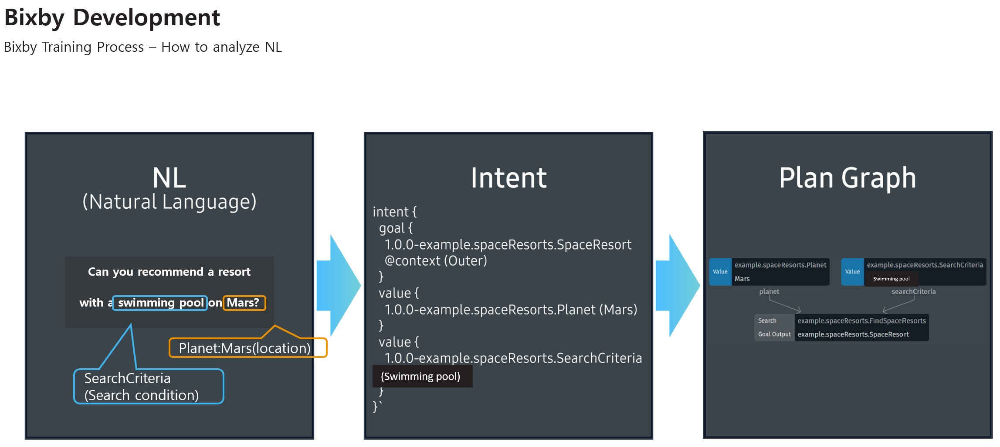

- Bixby Overview
- Bixby Development
- Task Description
Project PM: Sun Yeong Kang
Bixby Development

Bixby is trained by examples, therefore, it is important to set a good example.
The information you get in a sentence is called VALUE, while search result is called GOAL.�When natural language is entered, Bixby analyzes its meaning and transforms into a structured form called intents.
Using that intent, a plan is drawn to reach a final goal, and Action will be performed according to an action plan.
Suppose we proceed with the reservation through a capsule called Space Resorts.